Que es Pomodoro?
Pomodoro es una técnica con el propósito de mejorar la productividad medida por un temporizador. El tiempo de trabajo o estudio se divide en pequeños cambios con pausas intermedias. Por ejemplo, puedes tener 4 sesiones de trabajo de 25 minutos cada una con 5 minutos de descanso tomados después de cada sesión.
¡A trabajar se ha dicho!
Reloj Pomodro
Organiza tu tiempo
25m
5m
Trabajo
Sesion 1
25:00
iniciar
pausar
resetear